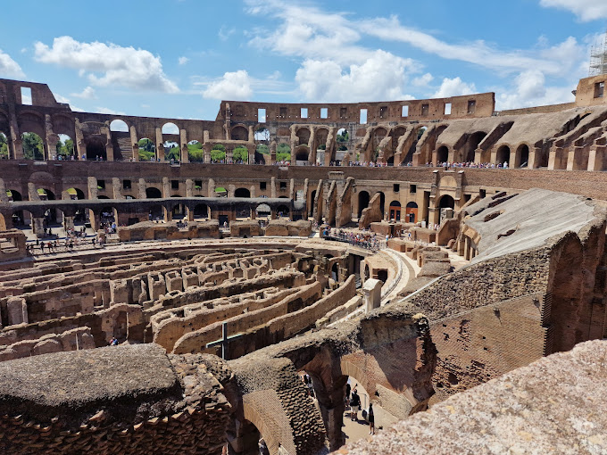

Day 1: Rome, Italy
Begin your journey at the heart of the Roman Empire. Visit the Colosseum, an ancient amphitheater renowned for its gladiatorial battles. Stroll through the Roman Forum, once the center of Roman public life, and marvel at the Pantheon, a stunning temple dedicated to all gods. Stay at Palazzo Manfredi or Hotel Capo d'Africa for easy access to these historical sites. Dine at Taverna dei Fori Imperiali for authentic Roman cuisine or enjoy a luxurious meal at Aroma Restaurant with a view of the Colosseum.
Day 2: Carthage, Tunisia
Travel to Carthage, now a suburb of Tunis, to explore the ruins of a once-thriving Roman city. Visit the Antonine Baths, one of the largest Roman bath complexes, and the Punic Ports. Immerse yourself in the blend of Roman and earlier Carthaginian history. Stay at La Villa Didon or Dar Said, both offering close proximity to the archaeological sites. Enjoy local dishes at Dar Zarrouk or fine dining at Dar El Jeld.
Day 3: Mérida, Spain
Fly to Mérida, originally founded as Emerita Augusta for retired Roman soldiers. Explore the magnificent Roman theatre and amphitheatre, still hosting performances today. Walk across the ancient Roman bridge spanning the Guadiana River. Stay at Parador de Mérida, located in a former convent, or Hotel Velada Mérida. Sample Spanish cuisine at Restaurante Chiringuito del Río or Sidrería Torreluz.
Day 4: Nîmes, France
Visit Nîmes, often referred to as the "French Rome." Discover the Arena of Nîmes, an exceptionally well-preserved Roman amphitheater, and the Maison Carrée, a stunning example of a Roman temple. Stay at Maison Albar - L'Imperator for luxury accommodations or Hôtel des Tuileries for a cozy stay. Dine at La Table du 2, located within the Musée de la Romanité, or enjoy a relaxed meal at Le Minot.

Day 5: Bath, United Kingdom
Head to Bath to experience the famous Roman Baths complex, built around natural hot springs. Wander the nearby Pump Room and admire Georgian architecture inspired by ancient Rome. Stay at the Royal Crescent Hotel & Spa or Gainsborough Bath Spa for an elegant retreat. For dining, The Pump Room Restaurant offers classic British fare, while Sally Lunn's serves one of the oldest recipes in Bath.
Day 6: Split, Croatia
Arrive in Split to explore Diocletian's Palace, a fortress-like palace built for the Roman emperor Diocletian. The palace forms half the old town, filled with lively shops, cafes, and Roman architecture seamlessly integrated into modern life. Stay at Hotel Park Split or Cornaro Hotel. Enjoy Mediterranean cuisine at Zinfandel's or the charming Villa Spiza.
Day 7: Ephesus, Turkey
Conclude your trip in Ephesus, one of the most complete Roman cities ever excavated. Visit the Library of Celsus, an ancient marvel of architecture, and the Grand Theatre, capable of seating 25,000 spectators. Stay at Cella Boutique Hotel & Spa or Ayasoluk Hotel. For authentic Turkish food, dine at Ejder Restaurant or Agora Restaurant in Selçuk.
Route Map
This image shows the full route of the planned trip (via car, transport time may vary).